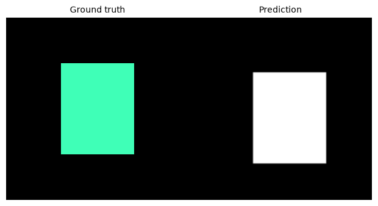
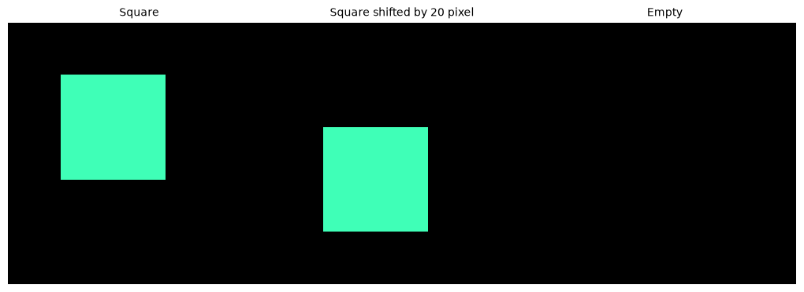
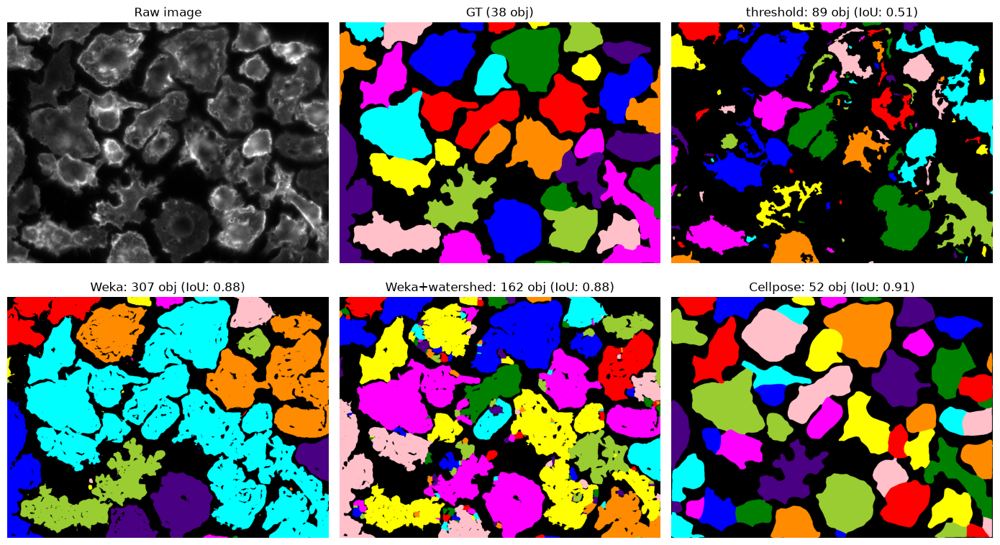

Quality control: Segmentation metrics#
Duration ~40 min · Session Day 2, Python notebooks
So far every judgement has been “look at the picture, does it seem right?”. That works until two results look similarly plausible, or until a reviewer asks how that judgement was reached.
This notebook replaces squinting with numbers, and shows that the obvious number is not enough.
This notebook covers
computing IoU and Dice, and how they differ
why pixel-level scores can be badly misleading
matching objects between a result and a ground truth
reporting precision, recall and F1 for a segmentation
Data: data/bbbc020/, plus the Weka export from the Fiji practical.
1. What is a ground truth?#
A ground truth is a reference segmentation against which we compare a computed segmentation.
For a teaching example, we can make a tiny ground truth ourselves. This makes the metric formulas easier to understand before we work with real microscopy images.
import numpy as np
import tifffile
import matplotlib.pyplot as plt
from skimage.measure import label
from skimage.color import label2rgb
from course import DATA, show
from iaf.plot import imshow, show_labels
def iou(a, b):
"""Intersection over union of two masks (or label images)."""
a, b = a > 0, b > 0
union = (a | b).sum()
return (a & b).sum() / union if union else 0.0
def dice(a, b):
"""Dice coefficient of two masks."""
a, b = a > 0, b > 0
total = a.sum() + b.sum()
return 2 * (a & b).sum() / total if total else 0.0
# A small synthetic ground-truth object
gt = np.zeros((100, 100), dtype=bool)
gt[25:75, 30:70] = True
# A slightly different prediction
prediction = np.zeros_like(gt)
prediction[30:80, 35:75] = True
fig, ax = plt.subplots(1, 2, figsize=(6, 3))
show_labels(gt, ax=ax[0], title="Ground truth")
imshow(prediction, ax=ax[1], title="Prediction")

2. The two pixel scores#
Both compare a predicted mask with a reference, and both are built from the same two quantities: the pixels they share, and the pixels either one covers.
IoU is also called the Jaccard index: same formula, different name, depending on the field.
They always agree on ordering (if one says a result is better, so does the other), but Dice is always the larger number for an imperfect overlap. Quoting Dice therefore flatters a result slightly, which is worth knowing when reading someone else’s paper.
Now lets implement the two metrics and test it on in silico data.
# A quick sanity check on shapes we can reason about by hand.
square = np.zeros((100, 100), bool)
square[20:60, 20:60] = True # 40 x 40 = 1600 px
shifted = np.zeros((100, 100), bool)
shifted[40:80, 20:60] = True # same size, moved down by 20
empty = np.zeros((100, 100), bool)
fig, (ax1, ax2, ax3) = plt.subplots(1, 3, figsize=(10, 5))
show_labels(square, ax=ax1, title="Square")
show_labels(shifted, ax=ax2, title="Square shifted by 20 pixel")
show_labels(empty, ax=ax3, title="Empty")
print(f"identical : IoU {iou(square, square):.3f} Dice {dice(square, square):.3f}")
print(f"half-overlapping: IoU {iou(square, shifted):.3f} Dice {dice(square, shifted):.3f}")
print(f"no overlap : IoU {iou(square, empty):.3f} Dice {dice(square, empty):.3f}")
identical : IoU 1.000 Dice 1.000
half-overlapping: IoU 0.333 Dice 0.500
no overlap : IoU 0.000 Dice 0.000

The half-overlapping case is the one to remember: the two squares share exactly half their area, and IoU says 0.33 while Dice says 0.50. Same picture, two different numbers, so the one used should always be stated.
3. Scoring the three methods#
To test how “good” our segmentation algorithms and efforts were so far we can compare it to a ground truth using the metrics we just learned.
from skimage.filters import threshold_otsu, gaussian
from skimage.morphology import remove_small_objects
from scipy.ndimage import binary_fill_holes
from skimage.color import rgb2gray
from cellpose import models
FIELD = "24h_2"
image = rgb2gray(tifffile.imread(DATA / "bbbc020" / "images" / f"jw-24h 2_c1.tif"))
truth = tifffile.imread(DATA / "bbbc020" / "gt" / f"jw-24h 2_c1 [1].tif")
# 1. yesterday's threshold pipeline
smoothed = gaussian(image, sigma=1, preserve_range=True)
mask = binary_fill_holes(smoothed > threshold_otsu(smoothed))
threshold_labels = label(remove_small_objects(mask, max_size=100))
# 2. yesterday's Weka classifier (class 1 is 'cell'; checked in notebook 03),
# both as it comes (semantic) and after the watershed from notebook 03.
weka_mask = tifffile.imread(DATA / "bbbc020" / "weka" / "jw-24 2_c1_classified.tif") == 1
weka_labels = label(weka_mask)
from scipy.ndimage import distance_transform_edt
from skimage.segmentation import watershed
weka_distance = distance_transform_edt(weka_mask)
weka_instances = watershed(-weka_distance, label(weka_distance > 10), mask=weka_mask)
# 3. Cellpose
cellpose_labels, _, _, _ = models.Cellpose(model_type="cyto", gpu=False).eval(
image, diameter=None, channels=[0, 0]
)
results = {
"threshold": threshold_labels,
"Weka": weka_labels,
"Weka+watershed": weka_instances,
"Cellpose": cellpose_labels,
}
print(f"{'method':16s} {'IoU':>7s} {'Dice':>7s} {'objects':>9s} (truth: {truth.max()})")
print("-" * 44)
for name, result in results.items():
print(f"{name:16s} {iou(result, truth):7.3f} {dice(result, truth):7.3f} {result.max():9d}")
method IoU Dice objects (truth: 38)
--------------------------------------------
threshold 0.509 0.675 89
Weka 0.878 0.935 307
Weka+watershed 0.880 0.936 162
Cellpose 0.909 0.953 52
By pixel score the ranking is clear: Cellpose, then Weka, then the threshold.
Now look at the object counts beside those scores. Weka scores a Dice of 0.94 , within a whisker of Cellpose, while producing 307 objects for 38 cells. For an experiment that counts cells, those two methods are not remotely comparable. The pixel score cannot see the difference, because it never asks how the pixels are grouped.
fig, axes = plt.subplots(2, 3, figsize=(14, 8))
axs = axes.flatten()
show(image, title="Raw image", ax=axs[0])
axs[1].imshow(label2rgb(truth, bg_label=0)), axs[1].axis("off"), axs[1].set_title(f"GT ({truth.max()} obj)")
for ax, (name, res) in zip(axs[2:], results.items()):
ax.imshow(label2rgb(res, bg_label=0)), ax.axis("off")
ax.set_title(f"{name}: {res.max()} obj (IoU: {iou(res, truth):.2f})")
[ax.axis("off") for ax in axs[2 + len(results):]]
plt.tight_layout()
plt.show()

3. Matching objects instead of pixels#
To ask object-level questions we have to decide when a predicted object is a particular real object. The standard rule: pair each prediction with the reference object it overlaps most, and accept the pairing if their IoU clears a threshold: conventionally 0.5.
Every prediction and every reference object then falls into one of three groups:
true positive: a prediction matched to a reference object
false positive: a prediction matched to nothing (invented)
false negative: a reference object nothing matched (missed)
def match_objects(prediction, truth, min_iou=0.5):
"""Greedily pair predicted objects with ground-truth objects by IoU.
Returns (true positives, false positives, false negatives).
"""
matched_truth = set()
true_positives = 0
for p in range(1, prediction.max() + 1):
predicted = prediction == p
if not predicted.any():
continue
# Only ground-truth objects that actually touch this prediction can win.
best_score, best_id = 0.0, None
for t in np.unique(truth[predicted]):
if t == 0:
continue
score = iou(predicted, truth == t)
if score > best_score:
best_score, best_id = score, t
if best_score >= min_iou and best_id not in matched_truth:
true_positives += 1
matched_truth.add(best_id)
false_positives = prediction.max() - true_positives
false_negatives = truth.max() - true_positives
return true_positives, false_positives, false_negatives
def scores(tp, fp, fn):
precision = tp / (tp + fp) if tp + fp else 0.0
recall = tp / (tp + fn) if tp + fn else 0.0
f1 = 2 * precision * recall / (precision + recall) if precision + recall else 0.0
return precision, recall, f1
header = f"{'method':16s} {'IoU':>6s} {'Dice':>6s} | {'TP':>4s} {'FP':>4s} {'FN':>4s} | {'prec':>6s} {'recall':>7s} {'F1':>6s}"
print(header)
print("-" * len(header))
for name, result in results.items():
tp, fp, fn = match_objects(result, truth)
precision, recall, f1 = scores(tp, fp, fn)
print(f"{name:16s} {iou(result, truth):6.3f} {dice(result, truth):6.3f} | "
f"{tp:4d} {fp:4d} {fn:4d} | {precision:6.3f} {recall:7.3f} {f1:6.3f}")
method IoU Dice | TP FP FN | prec recall F1
-----------------------------------------------------------------------
threshold 0.509 0.675 | 13 76 25 | 0.146 0.342 0.205
Weka 0.878 0.935 | 10 297 28 | 0.033 0.263 0.058
Weka+watershed 0.880 0.936 | 29 133 9 | 0.179 0.763 0.290
Cellpose 0.909 0.953 | 34 18 4 | 0.654 0.895 0.756
Read the two Weka rows against each other#
This is the pair to study.
Their pixel scores are almost identical: IoU 0.878 and 0.80, Dice 0.935 and 0.936. That is not a coincidence: a watershed only redraws boundaries inside a binary image it was handed, so essentially the same pixels are called “cell” either way.
Their object scores are not close at all. F1 goes from 0.058 to 0.290, and true positives from 10 to 29. Splitting the merged blobs turned nine cells that no metric could credit into nine correctly identified ones.
So the same segmentation, by one family of measure, did not change at all. The two families are answering different questions, and a paper reporting only Dice would show no improvement whatsoever here.
The single point to take from this notebook: the metric has to match the question being asked. For total stained area, a pixel score is right. For counting cells, or measuring anything per cell, object-level matching is required, and a good Dice will quietly mislead.
The other rows are worth reading too:
Threshold: precision 0.146, recall 0.342: it both invents and misses, which is what “89 objects for 38 cells, only 13 of them right” looks like.
Cellpose: recall 0.895 with precision 0.654. It found 34 of the 38 annotated cells and missed one.
4. When the ground truth is wrong#
# Cellpose's false positives: are they mistakes, or unannotated cells?
nuclei_truth = tifffile.imread(DATA / "bbbc020" / "gt" / "jw-24h 2_c5 [1].tif")
print("annotated nuclei :", nuclei_truth.max())
print("annotated cells :", truth.max())
print("Cellpose objects :", cellpose_labels.max())
annotated nuclei : 36
annotated cells : 38
Cellpose objects : 52
There are less annotated nuclei than annotated cells.
The dataset it is not perfect, and a handful of Cellpose’s false positives are real cells that were split. Its precision of 0.65 is therefore a floor, not an estimate: the metric has no way to credit a correct detection of an unlabelled cell.
Warning
Ground truth is not truth. It is one person’s annotation, made with finite time
and a particular purpose. Before trusting any score, look at what was annotated:
here, jw-24h 2_c* is the only field in which every cell was outlined, which is why
the exercise below uses it.
This cuts both ways in practice. A published benchmark number is only meaningful relative to the annotations it was computed against, and a model that scores worse than another on one dataset may simply disagree with that dataset’s conventions.
5. Choosing the matching threshold#
thresholds = [0.3, 0.5, 0.7, 0.9]
print(f"{'method':16s}" + "".join(f"{t:>10.1f}" for t in thresholds))
print("-" * (16 + 10 * len(thresholds)))
for name, result in results.items():
row = f"{name:16s}"
for t in thresholds:
tp, fp, fn = match_objects(result, truth, min_iou=t)
row += f"{scores(tp, fp, fn)[2]:10.3f}"
print(row)
print("\n(F1 at each matching IoU threshold)")
method 0.3 0.5 0.7 0.9
--------------------------------------------------------
threshold 0.283 0.205 0.110 0.016
Weka 0.070 0.058 0.052 0.029
Weka+watershed 0.330 0.290 0.200 0.020
Cellpose 0.800 0.756 0.600 0.333
(F1 at each matching IoU threshold)
The 0.5 convention is exactly that: a convention. A stricter threshold demands better-fitting outlines and every score falls.
Notice how differently they fall. Cellpose still manages 0.6 at a demanding 0.7, whereas plain Weka is flat at 0.052 until it collapses to zero: its handful of matches are blobs that happen to contain one dominant cell, and nothing about tightening the criterion can create matches for the cells that were merged away.
When an F1 is reported, the matching threshold should be stated with it. It is not comparable otherwise, and papers do vary.
Recap#
metric |
measures |
use it when |
|---|---|---|
IoU / Jaccard |
pixel overlap |
area or extent is what matters |
Dice |
pixel overlap, weighted to intersection |
as above; always reads higher than IoU |
precision |
how many of the detected objects are real |
false positives are costly |
recall |
how many real objects were found |
misses are costly |
F1 |
the balance of the two |
general-purpose object-level score |
And the three habits worth keeping:
Report a pixel score and an object score. They can disagree completely.
State which metric and which matching threshold were used.
Look at what the ground truth actually contains before believing any of it.
Next: 05_features, where the segmentation stops being the goal and becomes the
starting point for measuring the objects that were found.